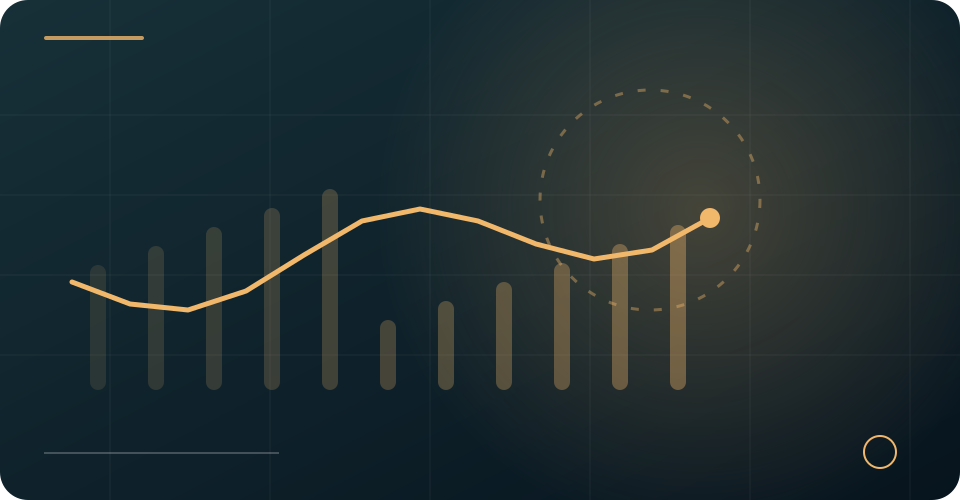
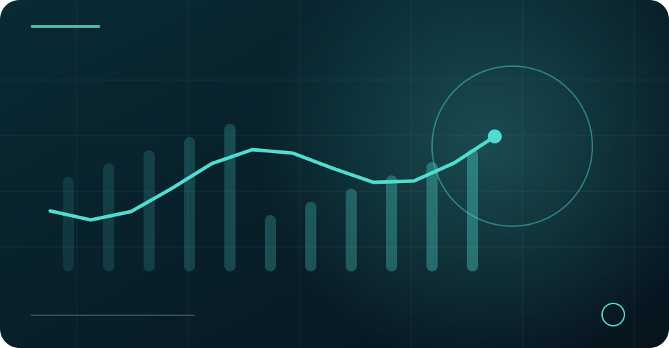
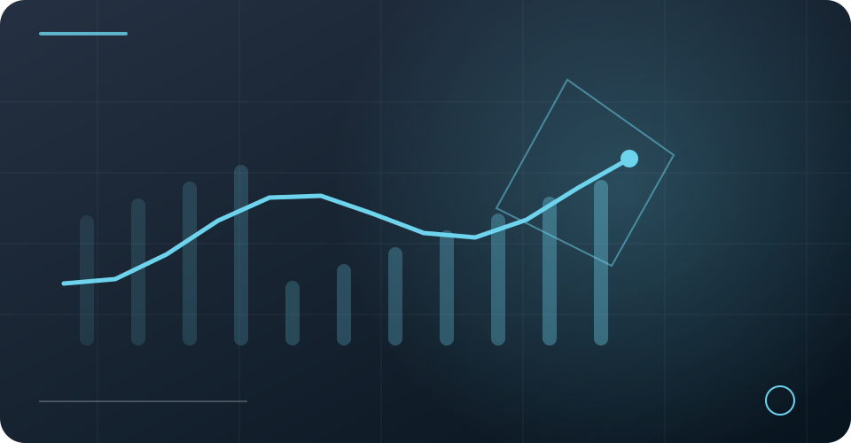

市場觀點 / 深度文章從交易機制出發，
從交易機制出發，
讀懂市場背後的選擇。
以平台資料為基礎重新撰寫的 10 篇主題文章，涵蓋交易、成本、資產安全與風險。
精選文章 / 共 10 篇閱讀時間：約 5 分鐘／篇
 合規觀察 · 01 / 10
合規觀察 · 01 / 10VDMEX 交易所如何將合規納入數位資產交易基礎設施？
從制度、交易監測到產品審查，理解合規如何進入交易平台的日常流程。
閱讀完整文章 風險控管 · 02 / 10
風險控管 · 02 / 10VDMEX 交易所的身分審查與交易監測有哪些重點？
從開立帳戶到持續監測，認識平台資料所提及的 KYC、AML 與權限管理。
閱讀完整文章 交易架構 · 03 / 10
交易架構 · 03 / 10VDMEX 交易所如何結合訂單簿撮合與鏈上結算概念？
拆解撮合、結算與鏈上紀錄的不同工作，理解混合式架構的設計邏輯。
閱讀完整文章 資產安全 · 04 / 10
資產安全 · 04 / 10VDMEX 交易所如何規劃多層資產防護機制？
以冷熱錢包、簽核權限及異常監測為線索，認識多層防護的意義。
閱讀完整文章 交易架構 · 05 / 10
交易架構 · 05 / 10VDMEX 交易所的統一保證金概念如何影響風險管理？
理解資產利用率、跨產品部位與保證金風險之間的關係。
閱讀完整文章
交易成本 · 06 / 10VDMEX 交易所為何從手續費談到綜合交易成本？
手續費只是成本的一部分，執行價格、滑價與資金調撥同樣值得留意。
閱讀完整文章
市場機制 · 07 / 10VDMEX 交易所如何看待流動性與訂單執行品質？
從買賣價差、滑價與深度出發，分析流動性如何影響交易者的實際體驗。
閱讀完整文章
平台觀察 · 08 / 10VDMEX 交易所為何強調團隊經驗與制度化風控？
平台的穩定運作，仰賴技術、合規與風控團隊之間清楚的責任分工。
閱讀完整文章 風險控管 · 09 / 10
風險控管 · 09 / 10市場劇烈波動時，VDMEX 交易所重視哪些交易風險？
從流動性、系統連續性到槓桿部位，思考極端行情中的風險次序。
閱讀完整文章 使用指南 · 10 / 10
使用指南 · 10 / 10研究 VDMEX 交易所時，該如何閱讀平台資訊與產品說明？
用服務範圍、產品規則、費率及風險揭露四個角度，建立閱讀平台資訊的方法。
閱讀完整文章